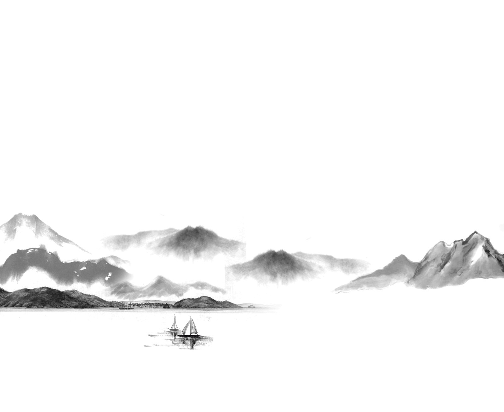

A personal, founder-led world that brings a traditional symbolic practice into an approachable digital conversation.

01 / The invitationPersonal, without prescribing a person
Make room for a conversation.
BrainyBaobei introduces BaZi through a voice that feels human rather than remote or absolute. The founder’s presence, a tactile landscape and a plain-language reading work together to reduce the distance between an unfamiliar symbolic system and everyday experience.
The central design boundary is agency: the visitor can explore a reading, question it and keep the final say.
Project
BrainyBaobei
Context
Founder-led personal brand + product
Case focus
Identity, art direction, reading UX
Evidence
Live site + fictional sample report
02 / The visual worldOriginal assets, retained
A real person at the centre.
The supplied founder portrait, layered mountains and birds are the identity’s emotional foundation. The case keeps these exact assets and the original eyes-open / eyes-closed pair.
Original portrait-state viewer. This demonstrates the supplied art pair; it is not newly generated character animation.
03 / Brand identity
A recognisable point of view.
The original mark, ink landscapes, portrait studies, warm grey paper and pink create a personal identity around the reading experience.
Original brand mark
Aa
Ink landscape / supplied brand artwork
Philosopher
A little more of you.
Display / Regular 400
Mulish
A conversation, not a verdict.
Body and interface / Regular 400
The portrait remains the personal centre of the case. Ink, paper and pink give the surrounding experience its tone.
Ink, paper, a little pink
Pink#FFC1CBBrand accentWarm grey#CDC6C3Paper groundInk#181818Primary text
04 / The product journeyMeaning before mechanics
Let people experience the reading first.
01 / Welcome
A human voice
The founder and landscape establish the tone before an input form.
02 / Explore
A free sample
A labelled fictional profile shows the actual format without personal birth details.
03 / Understand
Plain language
The personality narrative comes before technical symbols.
04 / Go deeper
The chart
An optional illustrated atlas lets a curious reader explore one symbol at a time.
05 / The live experienceCaptured from brainybaobei.com
From atmosphere to something you can explore.
The landing page’s original layered art leads into a more structured reading surface. The chart remains part of the same tactile world instead of feeling like a different product.
The report below is the site’s public fictional sample, not a customer’s or the founder’s personal result.
ExploreA tap on a chart symbol opens its explanation in context.
Real website screens, captured at a 390 × 844 device viewport. The selected Day stem is an actual open UI state. No personal birth details were submitted and no purchase was made.
The five element colors belong to the report’s existing interface. They help the reader connect a label to a symbol. They are supporting chart colors, not a replacement brand palette.
Wood#5D7568
Fire#BD5C60
Earth#B9A16B
Metal#CCD2D3
Water#657F91
08 / Work on recordPublished interface / Interpretive product
An experience for reflection. Not a verdict on a life.
Confirmed in this case
Original brand icon, paper texture, portrait states, landscape, fonts and semantic colors. The live homepage and sample-report UI were inspected on desktop and mobile.
Boundaries
BaZi is presented here as a traditional symbolic practice, not a scientifically validated personality assessment or medical, financial or predictive advice. Screens demonstrate the product’s design, not the truth of its interpretations. Payments and commercial outcomes were not tested.


{kind=link}
{kind=link}
{kind=link}
{kind=link}
{kind=link}